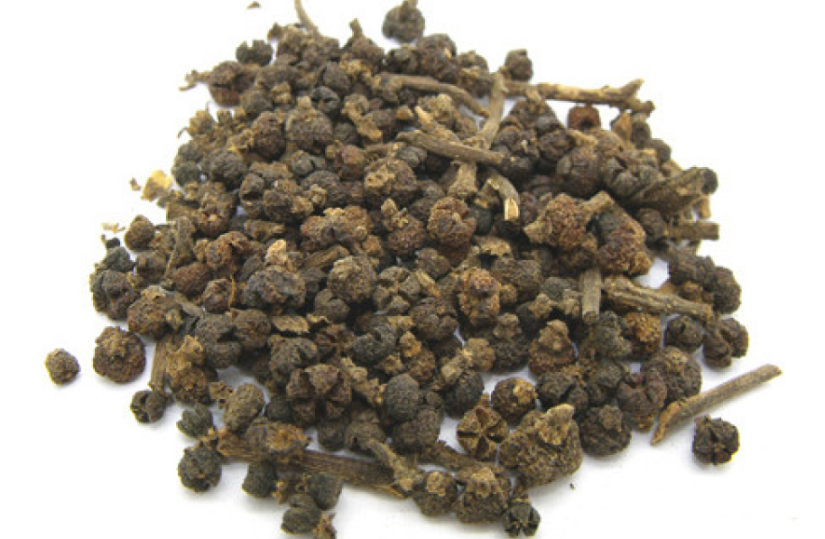

Эводии плод
У Чжу Юй
Wu Zhu Yu
Evodiae fructus
吴茱萸
Evodiae fructus
吴茱萸
Травы пяти элементов: 110.16

Производящие растения
Evodia rutaecarpa (Juss.) Benth. - эводия рутоплодная,
Evodia rutaecarpa (Juss.) Benth. var. officinalis (Dode) Huang -
эводия рутоплодная лекарственная,
Evodia rutaecarpa (Juss.) Benth. var. bodinieri (Dode) Huang -
эводия рутоплодная Бодиньера
Семейство
Rutaceae - рутовые
Используемая часть
Высушенные плоды
Показания к применению:
Противопоказания
Поскольку плоды эводии сильно сушат, они могут истощить Ци и потревожить Огонь,
их нельзя принимать в течение длительного времени. Противопоказаны при
недостатке Инь с признаками Жара
Предостережение
При передозировке могут возникать галлюцинации и нарушения зрения
Химический состав
Алкалоиды: эводен, оцимен, эводин, эводиамин, гошуюновая кислота, рутекарпин,
вучуин, гидроксиэводиамин, эвокарпин и др.
Рекомендуемая дозировка
1,5-4,5 г
Приготовление
Сырье используют в сочетании с
Фармакологическое действие
Формула Пяти Элементов 1014 – Ай Фу Нуань Гун Вань (Ai Fu Nuan Gung Wan)
Формула Пяти Элементов 10114 – Хуа То Цзай Цзао Вань (Hua To Zai Zao Wan)
Формула Пяти Элементов 10114 – Хуа То Цзай Цзао Вань (Hua To Zai Zao Wan)